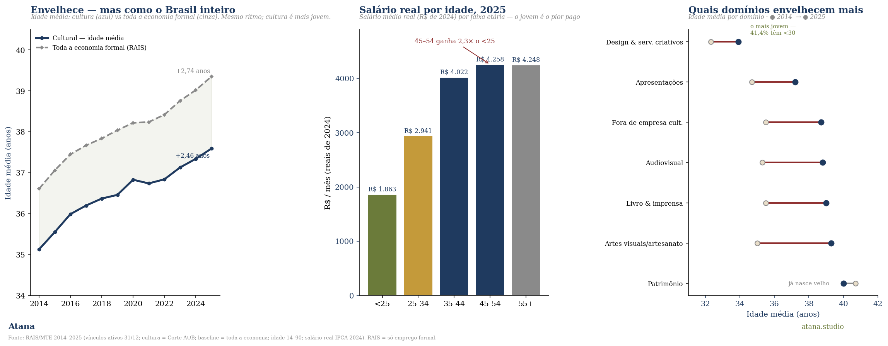
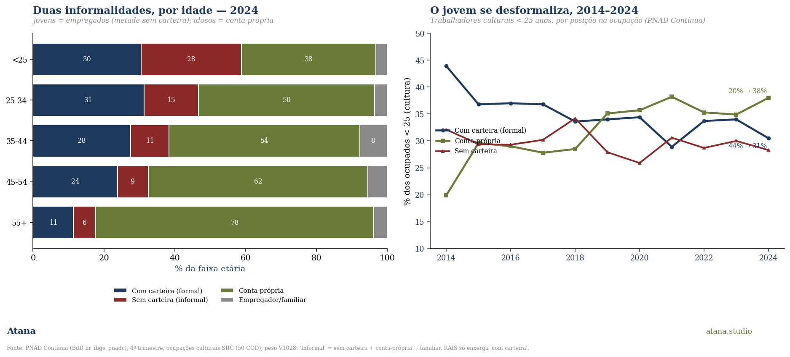

O sinal
A agenda da economia criativa promete enfrentar desigualdades. Quase sempre isso é lido em três eixos, gênero, raça, região, e o corpus atana-data tem os três. Há um quarto eixo que a retórica raramente nomeia: geração. E há um problema de instrumento: a fonte que normalmente usamos para medir o trabalho cultural no Brasil, a RAIS (o registro do emprego formal), é estruturalmente cega à maior parte do jovem trabalhador criativo. Esta Nota cruza a moldura formal (RAIS) com a informal (PNAD Contínua) e mostra uma desigualdade geracional que o instrumento usual subestima e localiza no lugar errado.
O método é o de sempre: ler o mesmo fenômeno por lentes independentes e tratar o encontro, e o desencontro, entre elas como o achado. Aqui, duas hipóteses fáceis caíram no teste, e as duas quedas tornaram a tese mais forte.
O que parecia ser o achado, e não é: o envelhecimento
O trabalho cultural formal envelhece. A idade média do vínculo ativo subiu de 35,1 (2014) para 37,6 (2025); a fatia abaixo de 30 anos caiu de 36,9% para 30,7%; a de 50+ subiu de 12,8% para 17,8%. Tentador parar aqui e dizer "o setor criativo está envelhecendo".
Não é cultural. Cruzando com a mesma medida para toda a economia formal (RAIS all-economy, mesma base, vínculo ativo em 31/12, idade 14–90): a economia inteira envelheceu +2,74 anos e perdeu 6,19 pontos da fatia abaixo de 30 no mesmo período, batendo quase exatamente com a cultura (+2,46 / −6,17). O envelhecimento cultural é a transição demográfica do Brasil, ponto final, não uma anomalia do setor. Aliás, em níveis a cultura é mais jovem que a economia: 37,6 vs 39,4 em 2025.

O envelhecimento, então, é pano de fundo. O achado está em como essa força de trabalho mais jovem que a média trata os seus jovens.
Dentro da moldura formal, o jovem perde em tudo
A RAIS, sozinha, já mostra um padrão geracional duro (2025, vínculos culturais ativos):
- Salário. O contrato cultural abaixo de 25 anos paga R\$ 1.863/mês (reais de 2024); o de 45–54 paga R\$ 4.258, 2,3× mais. O jovem começa em território de salário mínimo.
- Contrato. O jovem é 4,6× mais propenso a estar num contrato intermitente (6,19% abaixo de 25 vs 1,34% acima de 55), o instrumento precário criado pela reforma de 2017.
- Domínio. 41,4% dos vínculos jovens estão em Design e serviços criativos, o segmento que mais cresceu na década, mas majoritariamente a CNAE 73190 de publicidade (salário real −18%), o canto menos cultural-central do setor.
Onde o jovem está formalmente empregado, está no pior salário, no pior contrato e no domínio mais precário. Mas isso é só um terço da história, porque a RAIS só enxerga um terço dos jovens.
O que a RAIS não vê
A PNAD Contínua (microdados, ocupações culturais pela definição oficial do SIIC, 50 códigos COD) mede o que a RAIS não pode: a posição na ocupação de todos os trabalhadores, formais e informais. E aí o achado vira a hipótese do avesso.

Há duas informalidades, separadas por idade (2024):
| Faixa | Com carteira (formal) | Sem carteira (informal) | Conta-própria |
|---|---|---|---|
| < 25 | 30,5% | 28,3% | 38,0% |
| 25–34 | 31,3% | 15,4% | 49,7% |
| 35–44 | 27,5% | 10,9% | 53,8% |
| 45–54 | 23,8% | 8,7% | 62,0% |
| 55+ | 11,4% | 6,3% | 78,5% |
- O jovem não é o autônomo; o velho é. A conta-própria vai de 38% (abaixo de 25) a 78,5% (55+). A ideia de que "o jovem foge do emprego formal para trabalhar por conta própria" está, em níveis, invertida: a conta-própria é uma condição da coorte mais velha (artesãos, músicos e independentes estabelecidos).
- A informalidade do jovem é o emprego sem carteira. O jovem é empregado (30,5% com carteira + 28,3% sem carteira ≈ 59% deles), mas quase metade desses empregados não tem carteira assinada (28,3% vs 6,3% nos 55+, 4,5×). O jovem criativo que tem um emprego tem muito mais chance de tê-lo desprotegido.
- O ponto cego da RAIS, quantificado. A RAIS só vê com carteira, 30,5% dos jovens. Os outros ~28 pontos de jovens sem carteira (mais 38 de conta-própria) são invisíveis a ela. Tudo que a seção anterior mostrou descreve apenas o terço protegido do jovem trabalhador cultural; a precariedade é maior do que a moldura formal consegue mostrar.
- E na década o jovem se desformalizou. Entre 2014 e 2024, a fatia com carteira dos jovens caiu de 43,9% para 30,5%, enquanto a conta-própria subiu de 19,9% para 38,0%. Mesmo partindo de uma base baixa, o jovem cultural está sendo empurrado para fora do trilho formal. Isso é a "formalização recuando para o jovem", agora medido.
A síntese
A desigualdade geracional no trabalho criativo não é sobre uma taxa de envelhecimento incomum; essa é a demografia do país. É que uma força de trabalho mais jovem que a média canaliza os seus jovens para o pior negócio em todos os eixos: o pior salário, o pior contrato, o domínio mais precário e, fora do alcance da RAIS, o emprego sem carteira. E o instrumento que normalmente mede o trabalho cultural só vê o terço protegido, de modo que mesmo o retrato oficial subestima a precariedade.
É o pagamento do pluralismo metodológico: a lente formal (RAIS) e a informal (PNADC) juntas, e o ponto cego de uma é o achado da outra.
Quatro implicações de política. (i) Política de juventude cultural não pode ser desenhada sobre a RAIS sozinha: ela não vê dois terços do público-alvo. (ii) O contrato intermitente e o sem-carteira são a porta de entrada do jovem no setor; qualquer desenho de proteção (PNAB, editais) precisa alcançar quem não tem vínculo formal. (iii) A "formalização para baixo" (Note #10) tem uma face etária: o jovem é quem mais a vive. (iv) O envelhecimento não é argumento de crise setorial; é demografia nacional. A crise é distributiva e geracional, não etária.
Fontes
- RAIS/MTE 2014–2025: registro administrativo do trabalho formal (via Base dos Dados
br_me_rais); vínculos culturais ativos em 31/12, Corte A∪B, salário real IPCA 2024. Baseline de toda a economia na mesma base. - PNAD Contínua, microdados (Base dos Dados
br_ibge_pnadc, 4º trimestre): posição na ocupação (VD4009) × idade × ocupações culturais; definição pelos 50 códigos COD das Notas técnicas SIIC 2013–2024 (IBGE). - Cruzamentos: Note #09 (a década da erosão do contrato formal) · Note #10 (CEMPRE × MEIs, a formalização para baixo) · Análise 11 (painel RAIS longo).
Citar como: João Roque, Desigualdade geracional no trabalho criativo: o que a RAIS não vê, Atana Note #22, atana.studio, 2026. Corpus
atana-data, CC BY 4.0. Números verificados por script (RAIS + PNADC microdados).